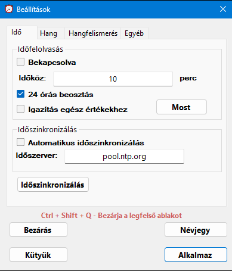
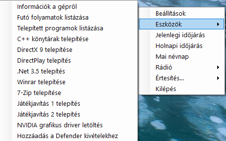
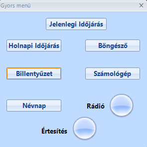
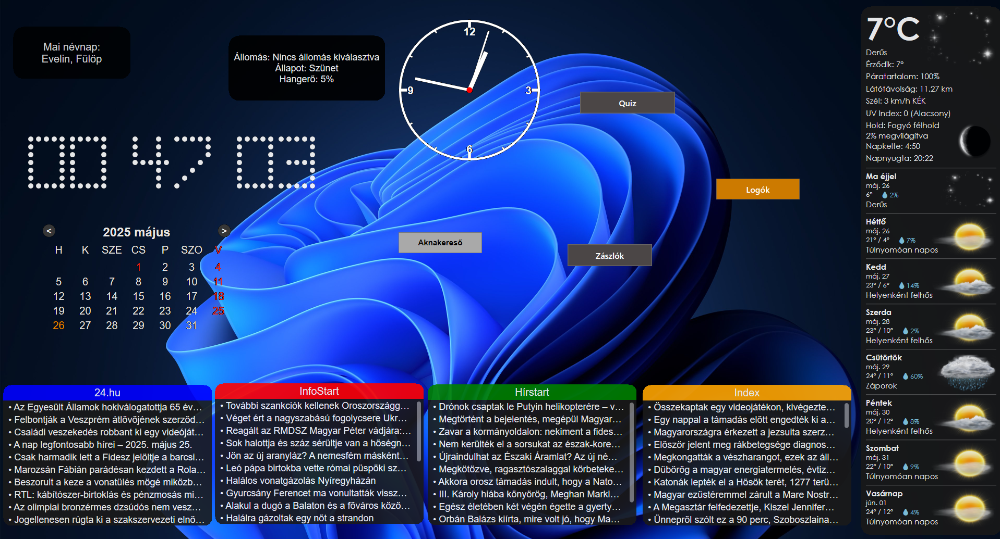

Egy Windows rendszerekre
készült alkalmazás. Nevével ellentétben nem csak beszélni tud.
🌓
Funkciók:
Időfelolvasás fix
időközönként
Időszinkronizálás
Képernyőkép készítés
Indítás a rendszerrel
Napi háttérkép
beállítás(Bing kereső háttérképek)
Gyors menü(Lecseréli a
középső egérgomb lenyomást)
Hangfelismerés
Jelenlegi vagy holnapi
időjárás felolvasása
Napi névnap felolvasás
Értesítés fix perc
után vagy fix időben
Játék közbeni átfedés
Rádióhallgatás
Eszközök(1 kattintós
gyors megoldások)
Virtuális
billentyűzet(elérhető a gyorsmenüről)
Widgetek(Kütyük)
A CTRL + Shift + Q lenyomásával betudod bezárni a legfelső
ablakot ha egy program megakadna és blokkolna a cselekvésben.
Elérhető egy virtuális billentyűzet is de csak kizárólag a gyors
menüből. A program használ egy tálca menüt ahonnét a legtöbb
funkció elérhető. Itt található az eszközök menü pont is.
Képernyőkép készítés a F9
billentyűvel lehetséges. Shift+F9 megnyomásra
csak az aktív ablakról csinál képet. A képek a Képek/Speaking_clock
mappába kerülnek
A beszédfelismerés nem működik ha az alapértelmezett
böngésző hangot játszik le. Így ha videót nézel az interneten nem
fog folyamatosan beszélni a számítógép. A böngésző és a számológép
megnyitása parancs nem működik ha teljes képernyős programot
használsz. Így senki nem tud kiszúrni veled játékközben, hogy
kimondja őket a hátad mögött. Elérhető egy funkció amelyben hozzá
lehet kötni egy parancsszót egy billentyűleütéshez. Így mondjuk
felgyorsíthatod a játékot a "speed" szó kimondásával.
Az átfedés arra szolgál, hogy játékközben állíts be
magadnak értesítéseket, hogy ne késd le a fontos eseményeket. Nem
működik olyan játékokban amelyek kizárólagos teljes képernyős
módban futnak. A gombot úgy lehet előhozni ha közel viszed az
egeret a bal felső sarokhoz. A másik sarokban egy folyamatosan
látható óra van.
Az eszközök menüpont az informatikában kevésbé jártas
felhasználóknak nyújthat gyors segítséget. Elérhető funkciók:
Számítógép információnak kilistázása, telepített/jelenleg futó
program kilistázása, legújabb C++ könyvtárak telepítése, legújabb
Winrar/7-zip telepítése, Directplay/.net 3 engedélyezése,
hozzáadás a Windows Defender kivételekhez, NVIDA driver keresés,
Játékjavítás 1-2 telepítés. Játékjavítások főleg akkor hasznosak
ha nem indul egy játék vagy grafikai hibákat tapasztalsz vagy túl
gyorsan fut egy játék.
Jelenleg elérhető kütyük: RSS hírolvasó, analóg vagy pontozott
óra, naptár, névnapok és rádió. Rádióban a jobb kattintással lehet
váltani állomást. Dupla kattintással lehet megállítani vagy
elindítani. Görgetéssel lehet a hangerőt változtatni. A
hírolvasókban is lehet lefelé görgetni ha 10-nél több hír
elérhető.
  

Rendszerkövetelmény: Windows 10 vagy 11, 64 bit
Verzió: 1.2
Letöltés:
Mindenkitől szívesen várom az építő jellegű javaslatokat. Ha
hiányzik egy rádióállomás könnyen hozzátudom adni a repertoárhoz.